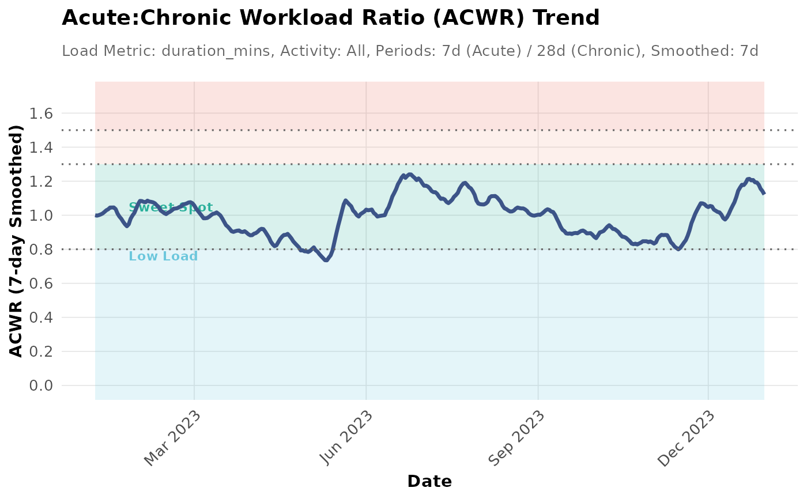

Visualizes the Acute:Chronic Workload Ratio (ACWR) trend over time.
Usage
plot_acwr(
stoken,
activity_type = NULL,
load_metric = "duration_mins",
acute_period = 7,
chronic_period = 28,
start_date = NULL,
end_date = NULL,
user_ftp = NULL,
user_max_hr = NULL,
user_resting_hr = NULL,
smoothing_period = 7,
highlight_zones = TRUE,
acwr_df = NULL,
group_var = NULL,
group_colors = NULL
)Arguments
- stoken
A valid Strava token from `rStrava::strava_oauth()`. Required unless `acwr_df` is provided.
- activity_type
Type(s) of activities to analyze (e.g., "Run", "Ride").
- load_metric
Method for calculating daily load (e.g., "duration_mins", "distance_km", "tss", "hrss").
- acute_period
Days for the acute load window (e.g., 7).
- chronic_period
Days for the chronic load window (e.g., 28). Must be greater than `acute_period`.
- start_date
Optional. Analysis start date (YYYY-MM-DD string or Date). Defaults to ~1 year ago.
- end_date
Optional. Analysis end date (YYYY-MM-DD string or Date). Defaults to today.
- user_ftp
Required if `load_metric = "tss"` and `acwr_df` is not provided. Your Functional Threshold Power.
- user_max_hr
Required if `load_metric = "hrss"` and `acwr_df` is not provided. Your maximum heart rate.
- user_resting_hr
Required if `load_metric = "hrss"` and `acwr_df` is not provided. Your resting heart rate.
- smoothing_period
Days for smoothing the ACWR using a rolling mean (e.g., 7). Default 7.
- highlight_zones
Logical, whether to highlight different ACWR zones (e.g., sweet spot, high risk) on the plot. Default `TRUE`.
- acwr_df
Optional. A pre-calculated data frame from `calculate_acwr`. If provided, `stoken` and other calculation parameters are ignored.
- group_var
Optional. Column name for grouping/faceting (e.g., "athlete_id").
- group_colors
Optional. Named vector of colors for groups.
Details
Plots the ACWR trend over time. Uses pre-calculated data or calls `calculate_acwr` (can be slow). ACWR is calculated as acute load / chronic load. A ratio of 0.8-1.3 is often considered the "sweet spot". If `acwr_df` is not provided, calls `calculate_acwr` first (can be slow and hit API limits).
Examples
# Example using pre-calculated sample data
data("athlytics_sample_acwr", package = "Athlytics")
#> Warning: data set ‘athlytics_sample_acwr’ not found
p <- plot_acwr(athlytics_sample_acwr)
#> Generating plot...
print(p)

if (FALSE) { # \dontrun{
# Example using real data (requires authentication)
# Please replace with your actual Strava application details for this to work.
# stoken_example <- rStrava::strava_oauth(
# app_name = "YOUR_APP_NAME_PLACEHOLDER",
# client_id = "YOUR_CLIENT_ID_PLACEHOLDER",
# client_secret = "YOUR_CLIENT_SECRET_PLACEHOLDER",
# cache = TRUE
# )
# If you have a valid stoken_example, you can then use it:
# Plot ACWR trend for Runs (using duration as load metric)
# if (exists("stoken_example") && inherits(stoken_example, "Token2.0")) {
# plot_acwr(stoken = stoken_example,
# activity_type = "Run",
# load_metric = "duration_mins",
# acute_period = 7,
# chronic_period = 28)
#
# # Plot ACWR trend for Rides (using TSS as load metric)
# plot_acwr(stoken = stoken_example,
# activity_type = "Ride",
# load_metric = "tss",
# user_ftp = 280) # FTP value is required
# } else {
# message("stoken_example not created or invalid. Skipping real data example for plot_acwr.")
# }
} # }